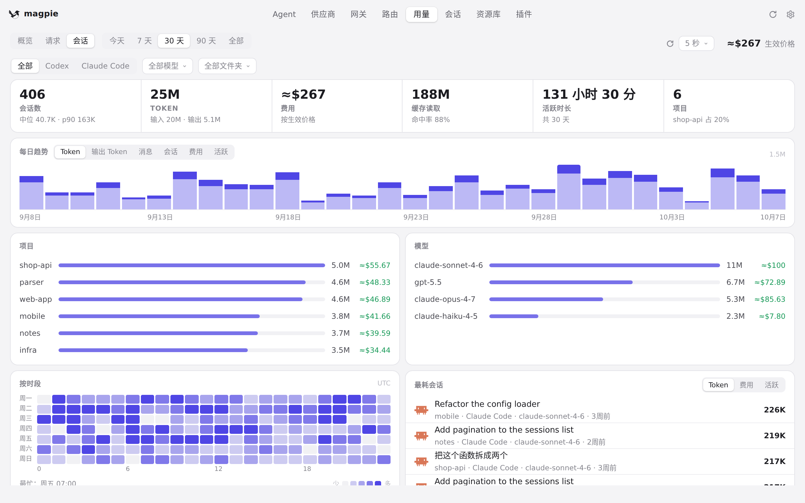
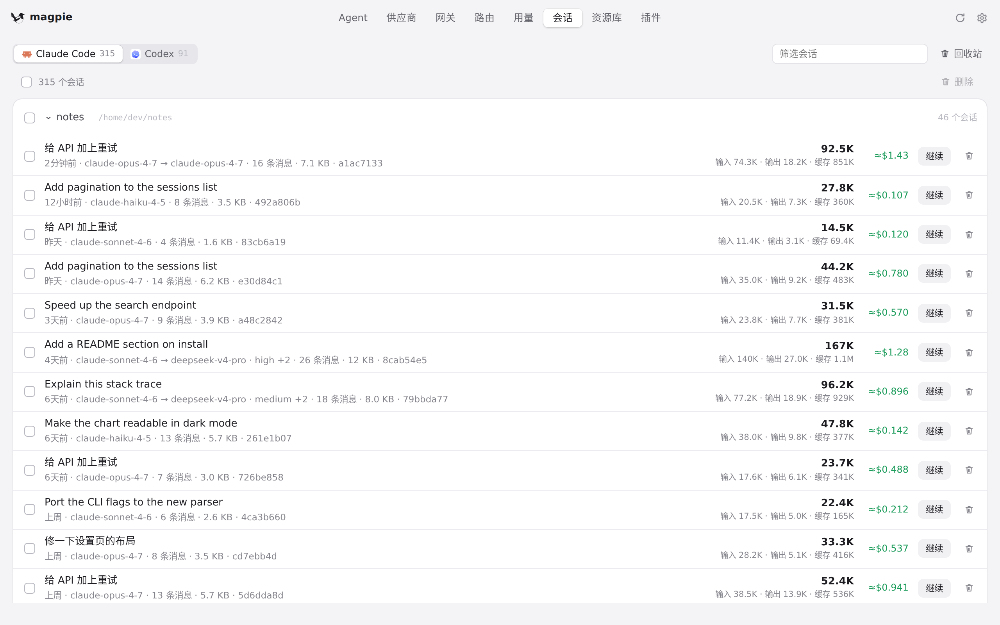
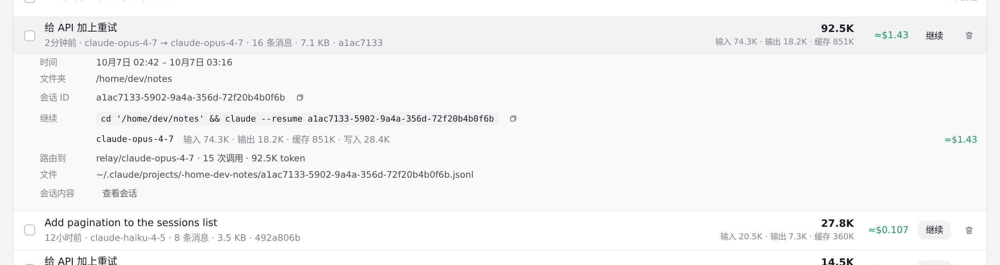

#1033 界面预览
commit 640e136 · 回到 PR · 为 Reasonix 本地会话接入读取后，会话列表（会话页与「用量 › 会话」）会显示 Reasonix 会话及其模型名与 token；当本地用量记录不完整时，行内多出一行「用量历史不完整」小字，详情顶部多一行说明，并补齐 zh/ja/de 文案。
红线是鼠标走过的轨迹，红色圆环是一次点击；底部文字是这一步在做什么。空格暂停，← → 逐段查看。

用量 › 会话的列表 · 用量 › 会话：会话列表，每行带模型与 token；Reasonix 会话会出现在这里

会话页的会话与详情 · 会话页：本机各 Agent 的本地会话列表

会话页的会话与详情 · 会话详情：用量不完整的会话会在顶部多一行提示